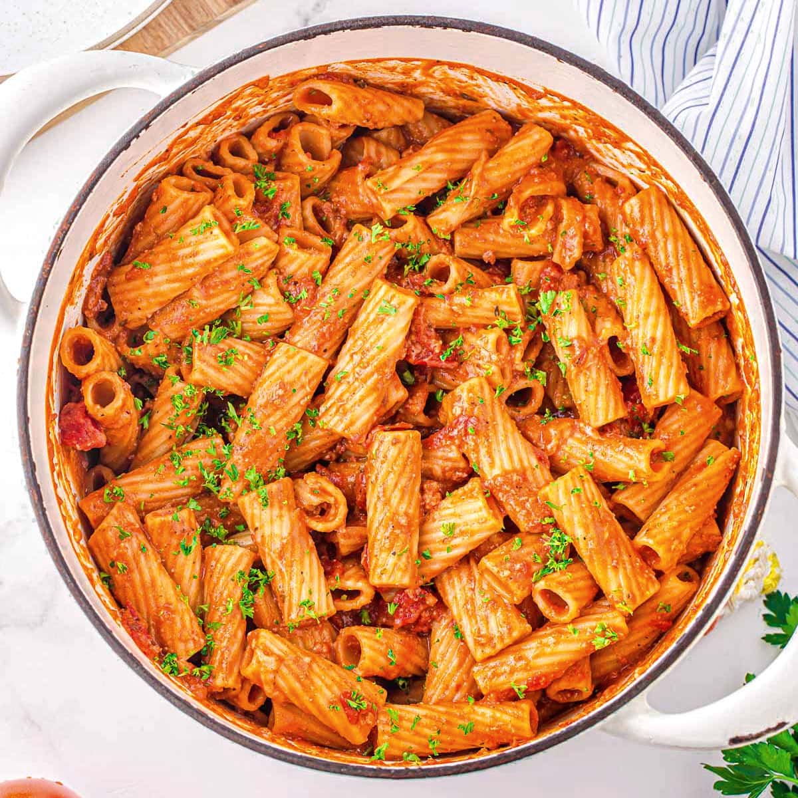

Chorizo Pasta

Description
Chorizo pasta another lazy dish of mine.
This dish is fatty in all of the good ways, uses less ingredients than chana masala, but packs an even bigger punch.
Ingredients (2 portions):
- Regular stick of chorizo.
- Two large white onions.
- 5 cloves of garlic.
- Tomato paste.
- Can of creme fraische.
- Spinach (about 300 grams)
- Cheese
- Pasta
- Any spices that you like
How to cook:
- Chop up chorizo, put it in a cold pan and turn the heat, set it to very low.
- While the chorizo fat is being extracted, dice onions and mince garlic.
- Once a good amount of fat has been extracted, add onion, cook for 5 minutes.
- Add tomato paste to taste, cook for 2 minutes.
- Add minced garlic, cook for 1 minute.
- Add creme fraische, cook until creme frasiche melts.
- Add spinach, cook until spinach shrinks.
- Add cooked pasta and cheese.
Enjoy.